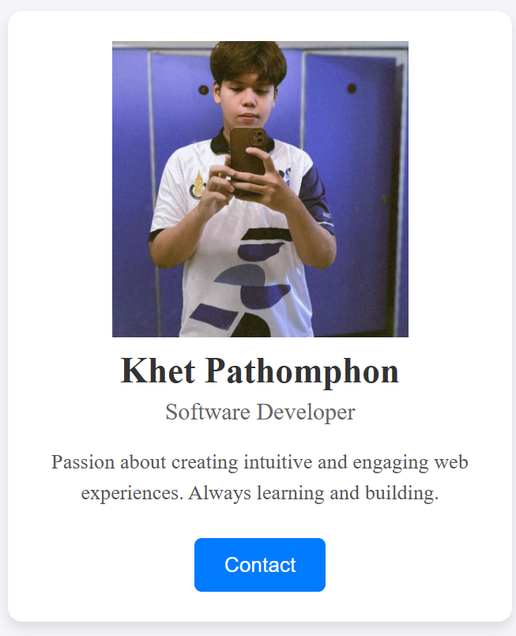

โจทย์นี้จะให้คุณฝึกฝนการใช้งาน CSS พื้นฐานเพื่อสร้างการ์ดโปรไฟล์ที่สวยงามและจัดระเบียบ คุณจะได้เรียนรู้การจัดแต่งข้อความ, รูปภาพ,
และการจัดการกับกล่องโมเดล (box model) เพื่อให้ออกมาดูดี เหมาะสำหรับผู้เริ่มต้นที่ต้องการทำความเข้าใจการประยุกต์ใช้ CSS ในโปรเจกต์จริง
สิ่งที่โจทย์ต้องการ :
• ตั้งค่า `background-color` ของ `.profile-card` เป็นสีขาว (`#ffffff`)
• เพิ่ม `padding` 20px รอบ `.profile-card`
• เพิ่ม `border-radius` 10px ให้กับ `.profile-card` เพื่อให้มีมุมโค้งมน
• เพิ่ม `box-shadow` ให้กับการ์ดเพื่อดูมีมิติ: `0 4px 8px rgba(0, 0, 0, 0.1)`
• ตั้งค่า `text-align` ของ `.profile-card` เป็น `center`
• ตั้งค่า `max-width` ของ `.profile-card` เป็น 300px
• ทำให้รูปภาพ `.profile-img` มีลักษณะกลมโดยใช้ `border-radius: 50%;` และตั้งค่า `width` และ `height` เป็น 100px
• ตั้งค่า `margin-bottom` ของ `.profile-img` เป็น 15px
• ปรับขนาดตัวอักษรของ `.profile-name` เป็น `24px` และ `font-weight` เป็น `bold`
• ปรับสีตัวอักษรของ `.profile-title` เป็นสีเทาอ่อน (`#666`) และ `font-size` เป็น `16px`
• ปรับขนาดตัวอักษรของ `.profile-description` เป็น `14px` และ `line-height` เป็น `1.5`
• จัดแต่งปุ่ม `.profile-button`: ให้มี `background-color` เป็นสีฟ้า (`#007bff`), `color` เป็นสีขาว (`#ffffff`),
`padding` 10px 20px, `border` ไม่มี (`none`), และ `border-radius` 5px
